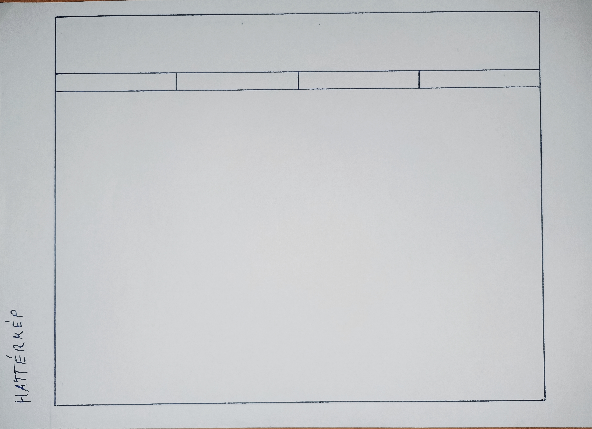

| Bemutatkozás | Természet | Generált | Leírás |
WeboldaltervSzerettem volna a négy weboldalt haonlóképpen alapra építeni ezt pedig az alábbi módon képzeltem el.
 A feladat megoldása közben felmerülő nehézségekAzon okból kifolyólag, hogy eddig nem foglalkoztam mélyrehatóbban weblapszerkesztéssel sok dolognak utána kellet néznem de szerencsére komolyabb problémákba nem ütköztem. Számomra a navigációs sáv elkészíte volt a legnehezebb. Mivel sajnos eddig nem igazán van semmi említésre métó szakmai munkám, és a hobbijaimat pedig nem szeretném a nagyvilággal megosztani, valamint sajnos sokszor a kreativitásom nem mondható csodásnak így, miután elkészítettem az első két oldalt, úgy döntöttem, hogy a harmadik szabadon választható oldalt (ami eredetileg a Hobbijaim nevet kapta volna) ez egyik ajánlott szöveggenerátor segítségével töltöm ki. Az említett oldal a Generált nevet kapta. A megoldás során használt weboldalak |